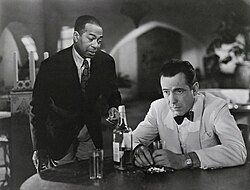
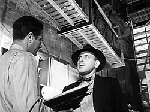
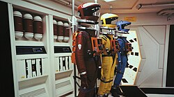

Clásico Imperdible

Drama / Romance
★ 9.2
Casablanca
Dirigida por Orson Welles (1941)
Tras la muerte de un poderoso magnate de los medios de comunicación, un grupo de periodistas intenta descifrar el significado de sus últimas palabras: "Rosebud".
Inovación Técnica

Drama / Misterio
★ 8.9
Ciudadano Kane
Dirigida por Orson Welles (1941)
Tras la muerte de un poderoso magnate de los medios de comunicación, un grupo de periodistas intenta descifrar el significado de sus últimas palabras: "Rosebud".
Cine de Culto

SciFi / Filosófico
★ 9.8
2001: Odisea en el espacio
Dirigida por Stanley Kubrick (1941)
Una enigmática estructura influye en la evolución humana antes de que una nave espacial sea enviada a Júpiter bajo el control de la inteligencia artificial HAL 9000.